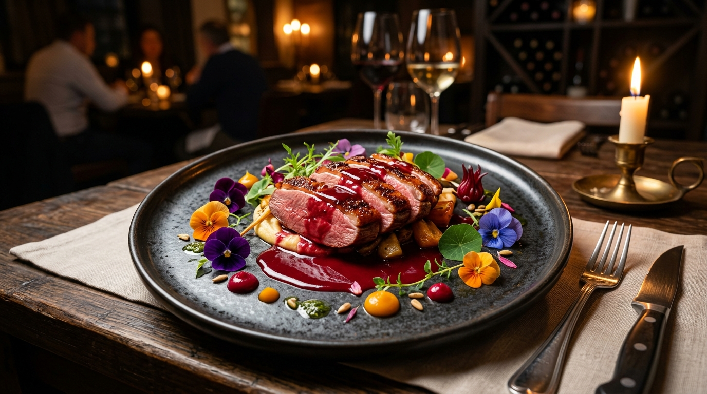
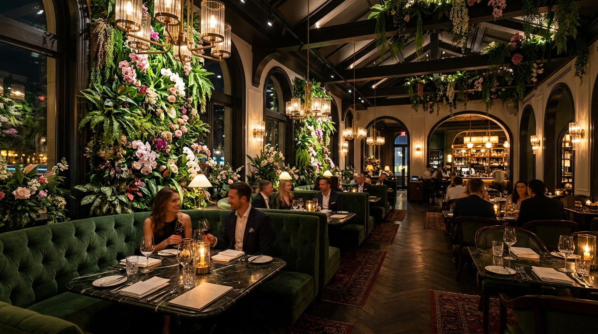
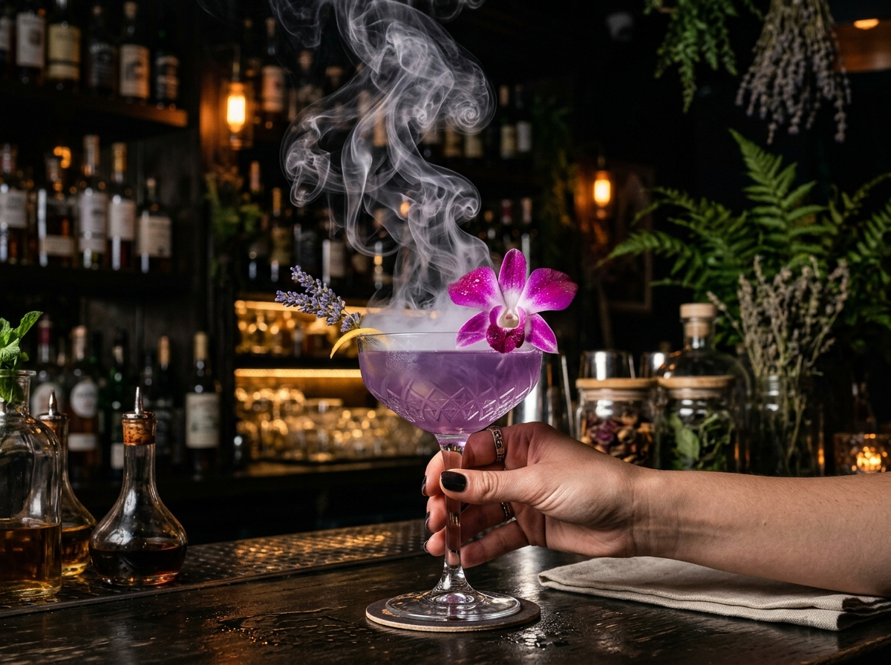
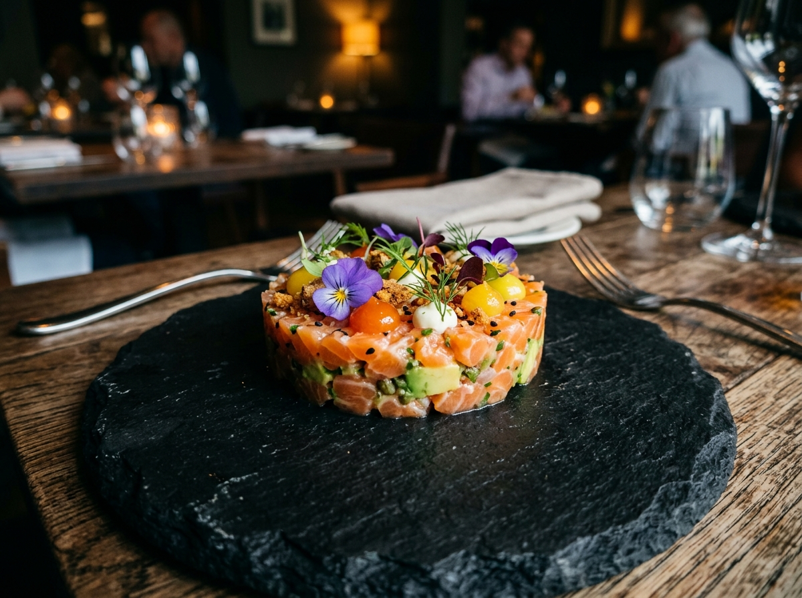
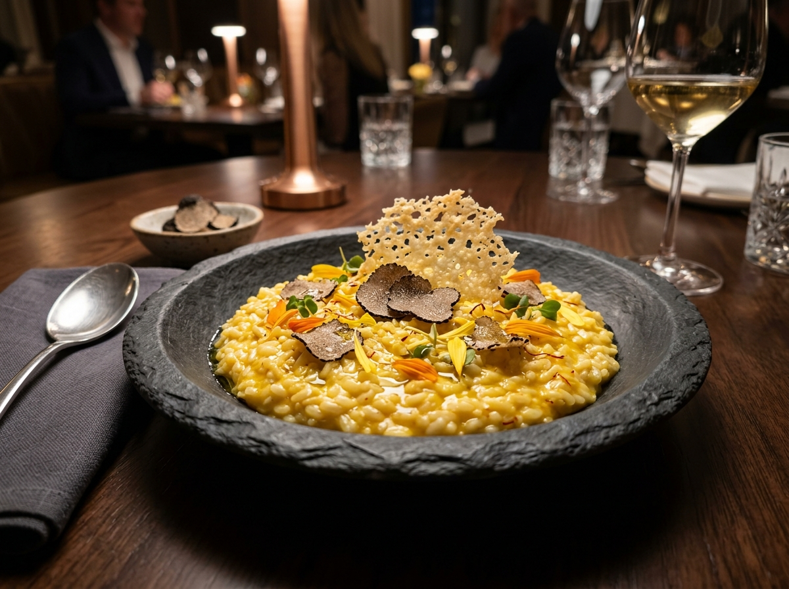
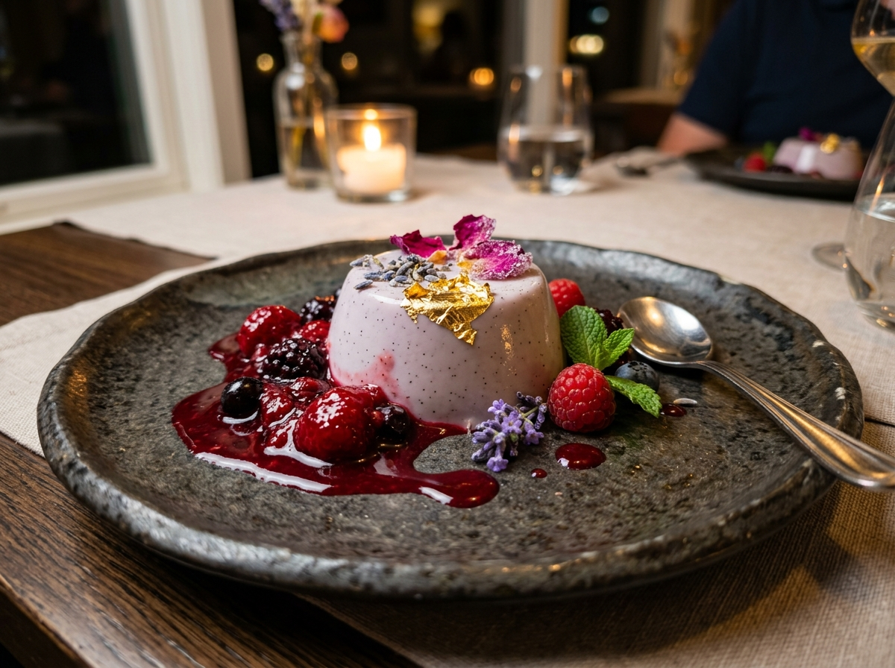

En FloreriA NGL fusionamos la poesía de los jardines botánicos con la alta cocina contemporánea. Platillos de autor aromatizados con flores comestibles de cultivo orgánico propio y mixología de vanguardia.
Flores Orgánicas
Calificación Gourmand
Ambientes de Lujo

Cosechamos nuestras flores comestibles y hierbas aromáticas al amanecer para garantizar la máxima frescura y pureza en cada bocado.
Creaciones culinarias exclusivas que combinan técnicas modernas con extractos botánicos, logrando texturas y aromas inigualables.
Cócteles de autor infusionados con botánicos, licores florales y nieblas aromáticas diseñados para despertar tus sentidos.
Espacios íntimos rodeados de muros verdes, iluminación tenue a la luz de las velas y una atmósfera sofisticada e inolvidable.


FloreriA NGL nació de una pasión inusual: unir el refinado arte de la florería contemporánea con la más alta gastronomía sensorial. No somos un restaurante convencional; somos un santuario gastronómico donde cada plato cuenta una historia botánica.
Trabajamos mano a mano con botánicos y agricultores locales, seleccionando flores comestibles como pensamientos, violas, caléndulas, orquídeas y flores de borraja que aportan notas aromáticas únicas a cada preparación.
Sin pesticidas, respetando los ciclos estacionales de la naturaleza.
Una selecta cava internacional seleccionada por nuestro sommelier.
Espacios reservados para celebraciones, aniversarios y cenas corporativas.
Una mirada a la elegancia de nuestros platillos, coctelería y acogedores espacios florales.



Asegura tu lugar en nuestro bistró botánico. Confirmación instantánea y atención personalizada.
"FloreriA NGL ha redefinido lo que significa salir a cenar. El pato glaseado con flor de jamaica fue una explosión sensorial inolvidable. El servicio y la ambientación floral son de nivel mundial."
"Celebramos nuestro aniversario en la Terraza Jardín Botánico. El cóctel Orquídea Violeta con humo aromático fue el punto culminante de la noche. ¡Recomendadísimo al 1000%!"
"La fusión de sabores sutiles y flores comestibles frescas eleva cada plato a una obra de arte. El risotto de azafrán con trufa y caléndula es sencillamente sublime."
Av. Las Flores 450, Distrito Gourmet (San Isidro / Miraflores)
Estacionamiento privado & Valet Parking disponible+51 999 888 777 · reservas@florerangl.com
| Lunes a Jueves | 12:30 PM - 11:30 PM |
| Viernes y Sábados | 12:30 PM - 00:30 AM |
| Domingos (Brunch Floral) | 12:00 PM - 10:30 PM |
Sí, absolutamente. Todas nuestras flores provienen de nuestro invernadero certificado 100% orgánico, libre de cualquier pesticida o químico, cultivadas específicamente para consumo gastronómico de alta gama.
Contamos con una amplia variedad de opciones vegetarianas, veganas y libres de gluten señalizadas claramente en nuestra carta. Si tienes alergias específicas, nuestro chef adaptará tu menú.
Sugerimos vestimenta Smart Casual / Elegante para preservar la atmósfera íntima y sofisticada de nuestro restaurante.
¡Por supuesto! Puedes armar tu pedido directamente desde nuestra carta en esta página web y enviarlo con un solo clic a nuestro WhatsApp para coordinar tu entrega o retiro.